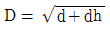
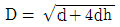
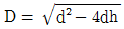
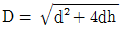
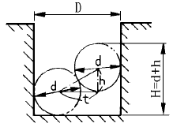
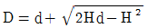
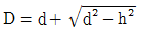
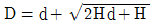

사출(프레스)금형산업기사 (2004-08-08 기출문제)
1과목: 금형설계
1. 웰드라인(weld line)의 발생 원인 중 사출 성형기에 의한 것은?
- 사출 압력이 낮다.
- 금형 온도가 너무 낮다.
- 수지의 흐름이 나쁘다.
- 게이트의 위치나 수가 부적당하다.
(정답률: 67%)

2. 사출성형기의 플런저의 직경이 10cm, 스트로우크가 80 cm이고 용융수지의 밀도가 1.⑤g/cm3이며 사출효율이 95 %일 때의 사출량은 약 몇 g인가?
- 6267.5
- 6367.5
- 6467.5
- 6583.5
(정답률: 43%)
3. 다음 중 사출금형의 강도에 나쁜 영향을 주는 요인이 아닌 것은?
- 재질에 따른 응력 집중
- 표면 다듬질의 영향
- 대기 습도에 따른 영향
- 볼트 또는 압입에 의한 형 맞춤의 영향
(정답률: 59%)
4. 펀치 하면에 붙은 블랭크나 스크랩을 제거하여 주는데 사용되는 핀은?
- 파일럿 핀
- 핀 게이지
- 다월 핀
- 셰더 핀
(정답률: 75%)
5. 금형수정에 있어서 성형품의 분리에 나쁜 영향을 미치는 수정 방법은?
- 리브(Rib)의 깊이를 깊게 한다.
- 캐비티의 폭을 약간 키운다.
- 코어의 치수를 약간 줄인다.
- 보스의 높이를 줄인다.
(정답률: 77%)
6. 펀칭용 금형의 다이 릴리프(relief)가 잘못 설계되면 여러 가지 불합리한 사항이 발생되는데 해당되지 않는것은?
- 펀치의 파손
- 스크랩의 막힘 및 상승
- 버(burr)의 상승
- 펀칭력의 감소
(정답률: 46%)
7. 광선 투과율이 93% 정도 되며, 광학렌즈, 조명기구, 렌즈 등에 사용되는 수지는?
- 메타크릴수지(PMMA)
- 폴리아미드(PA)
- 폴리프로필렌(PP)
- 폴리에틸렌(PE)
(정답률: 79%)
8. 받침판 아래에 설치한 block으로서 성형품을 ejection할 때 ejector plate가 움직일 수 있는 공간을 만들어 주는 부품은?
- silde block
- core plate
- support block
- spacer block
(정답률: 78%)
9. 원통 드로잉 제품의 직경을 d라 하고, 높이를 h라 할 때 블랭크 직경 D는 어떻게 계산되는가?




(정답률: 72%)
10. 호칭치수 150 mm, 성형수축률 5/1000 일 때 상온의 금형치수는 몇 mm 로 가공해야 되는가?
- 150.00
- 149.25
- 150.75
- 151.⑤
(정답률: 91%)
11. 두께 3 mm의 연강판을 사용하여 한변의 길이가 10 mm인 정4각형의 블랭크를 블랭킹 할 경우에 필요한 전단력 (kgf)은? (단, 전단저항 τ = 40 kgf/mm2)
- 5330
- 4800
- 533
- 480
(정답률: 75%)
12. 러너를 설계할 때 유의할 사항이 아닌 것은?
- 단면형상
- 크기
- 수지 용융온도
- 성형품 레이아웃
(정답률: 62%)
13. 슬라이드 코어설계시 유의 사항이 아닌 것은?
- 슬라이드 코어의 경사핀에 각도를 준다.
- 슬라이드 코어와 경사핀중 한쪽에 여유를 준다.
- 록킹블록경사각과 경사핀의 각도를 같게한다.
- 대형 슬라이드 코어에서는 경사핀을 크게한다.
(정답률: 65%)
14. 드로잉 작업으로 구성된 트랜스퍼 금형에서 사용되지 않는 금형 부품은?
- 위치결정 플레이트
- 리프터 핀
- 블랭크 홀더
- 스크랩 커터
(정답률: 42%)
15. 다음 중 Guide post 위치에 따른 Die set의 종류가 아닌 것은?
- AB type
- BB type
- CB type
- FB type
(정답률: 78%)
16. 이젝터 핀의 사용이 잘못 되었을 경우 일어나는 현상은?
- 싱크마크(sink mark)
- 실버 스트리크(silver streak)
- 웰드 라인(weld line)
- 크랙(crack), 백화
(정답률: 64%)
17. 펀치나 다이에 시어각을 두는 가장 큰 이유는?
- 펀치나 다이를 보호하기 위하여
- 전단면의 형상을 좋게하기 위하여
- 다이에 대하여 펀치의 편심을 방지하기 위하여
- 전단하중을 감소시키기 위하여
(정답률: 70%)
18. 가늘고 긴 제품의 깊은 드로잉 가공에 적합한 프레스는?
- 크랭크리스 프레스
- 너클조인트 프레스
- 멀티슬라이드 프레스
- 토글 프레스
(정답률: 65%)
19. 틈새(clearance)에 관한 내용으로 틀린 것은?
- 틈새가 작을수록 전단하중은 증가한다.
- 틈새가 작을수록 제품 정밀도가 좋아진다.
- 틈새가 클수록 파단면의 경사각이 작아진다.
- 틈새가 클수록 휘어짐(camber)이 증가한다.
(정답률: 56%)
20. 다음 중 블랭킹 펀치 하면에 직접 파일럿 핀(pilot pin)을 설치한 목적으로 옳은 것은?
- 피어싱과 블랭킹을 동시에 수행하기 위해서
- 피어싱을 쉽게 하기 위해서
- 블랭킹을 쉽게 하기 위해서
- 위치 결정과 동시 블랭킹을 하기 위해서
(정답률: 89%)
2과목: 기계가공법 및 안전관리
21. 금형 부품중 NC 선반작업으로 가공이 곤란한 부품은?
- 스프루 부시
- 사이드코어 블록
- 로케트 링
- 밀핀
(정답률: 83%)
22. 다음 중 소성가공이 아닌 것은?
- 브로우칭
- 단조
- 인발
- 나사전조
(정답률: 48%)
23. 전 표면을 둘러 쌓도록 제작되며, 공작물을 한번 위치결정한 상태에서 모든 면을 완성 가공 할 수 있는 지그는?
- 템플릿 지그
- 박스지그
- 채널지그
- 리프지그
(정답률: 71%)
24. 방전 가공을 할 때 전극 재질로 사용하기가 가장 곤란한 것은?
- 흑연
- 아연
- 구리
- 황동
(정답률: 52%)
25. 풀림 열처리의 목적이 아닌 것은?
- 단조, 주조, 기계가공에서 생긴 내부응력 제거
- 금속 결정입자의 조절
- 열처리로 인하여 경화된 재료의 연화
- 담금질한 강철을 적당한 온도로 A1 변태점 이하에서 가열하여 인성을 증가
(정답률: 60%)
26. 컨테이너 속에 재료를 넣고 램으로 압력을 가해 가공하는 것은?
- 압연가공
- 압출가공
- 인발가공
- 전조가공
(정답률: 57%)
27. 호칭 200 mm의 사인바에 의해서 30° 를 만드는데 필요없는 블록게이지는?
- 40 mm
- 50 mm
- 20 mm
- 10 mm
(정답률: 26%)
28. 유압 프레스에서 램의 유효 단면적이 60cm2, 단위면적에 작용하는 유압이 20㎏f/cm2 일때 유압프레스의 용량은?
- 1.2 ton
- 12 ton
- 60 ton
- 120 ton
(정답률: 66%)
29. 강을 담금질한 후 재료에 내부 응력을 제거하거나 인성을 주기 위한 목적으로 행하는 열처리는?
- 침탄법
- 담금질
- 뜨임
- 불림
(정답률: 79%)
30. 다음중 단조작업이 아닌 것은?
- 압출단조
- 자유단조
- 형 단조
- 업셋단조
(정답률: 35%)
31. 유리, 수정, 다이아몬드, 텅스텐, 열처리된 강 등을 가공할 수 있으며 공작물 표면에 가공변형이 남지 않는 가공법은?
- 방전가공
- 전해가공
- 초음파가공
- 레이저가공
(정답률: 80%)
32. 방전 가공에 대한 설명이다. 잘못 설명한 것은?
- 초경합금도 가공할 수 있다.
- 가공 후 가공 변질층이 남는다.
- 전기 부도체인 공작물도 가공할 수 있다.
- 임의의 단면 형상의 구멍 가공도 할 수 있다.
(정답률: 53%)
33. NC에서 수동으로 데이터를 입력하여 가공하는 방법은?
- TAPE
- MDI
- EDIT
- READ
(정답률: 74%)
34. 금형에 핀구멍을 NC드릴링 머신에서 수치제어(NC)를 이용하여 가공하려고 한다. 다음 어느 제어방식을 사용하게 되는가?
- 위치결정 방식
- 직선절삭 방식
- 윤곽절삭 방식
- 직선보간 직선절삭 방식
(정답률: 79%)
35. 금형내에 공기를 불어 넣어 부풀려서 성형하는 방법으로 대량생산에 이용되는 금형은?
- 고무금형
- 요업금형
- 유리금형
- 피혁금형
(정답률: 60%)
36. 열경화성 수지 중에서 경질성, 내식성이 있는 수지는?
- 페놀수지
- PVC
- 폴리에틸렌
- 염화비닐
(정답률: 81%)
37. 연성 재료를 저속 절삭할 때 나타나며 칩의 유동방향이 공구의 사방상향(斜方上向)으로 일어나는 칩의 종류는?
- 유동형 칩
- 전단형 칩
- 균열형 칩
- 경작형 칩
(정답률: 41%)
38. 금형의 연마에 의한 다듬질 가공으로 버핑이 있다. 버핑의 3요소가 아닌 것은?
- 연삭 입자
- 유지
- 광택재
- 직물
(정답률: 29%)
39. 치공구를 사용할 때의 장점이다. 적합하지 않은 것은?
- 정밀도가 향상되고 호환성을 갖는다.
- 미숙련자도 정밀작업이 가능하다.
- 제품불량이 적으나 생산 능력이 감소된다.
- 제품을 검사하는 시간이나 방법을 간단히 할 수 있다
(정답률: 70%)
40. KS에서 규정된 표면 거칠기 표시 방법이 아닌 것은?
- 최대높이 거칠기
- 중심선 평균 거칠기
- 10점 평균 거칠기
- 자승 평균 거칠기
(정답률: 71%)
3과목: 금형재료 및 정밀계측
41. 게이지 블록의 평면도 측정에 이용하는 측정기로 가장 적합한 것은?
- 사인 바
- 비접촉식 3차원 측정기
- 평행 정반
- 광선 정반
(정답률: 49%)
42. 텅스텐을 주성분으로 한 소결합금으로 내마모성이 우수하고 대량 생산용 금형재료로 쓰이나 다이아몬드 및 방전가공 등 특수 가공에 의하여 가공되는 재료는?
- 합금 공구강
- 고속도강
- 초경합금
- 탄소 공구강
(정답률: 85%)
43. 게이지 블록 500 mm와 조오를 홀더에 넣고 20㎏으로 고정할 때 변형량은 몇 ㎛ 인가? (단, 게이지 블록의 단면 : 35× 9 mm, 세로탄성계수 : 2.1× 104 ㎏/mm2 이다)
- 1.5
- 2
- 2.5
- 3
(정답률: 32%)
44. 성형수축률에 영향을 주는 요인들이다. 이 중 틀린 것은?
- 열적수축
- 분자배향의 완화에 의한 수축
- 탄성회복
- 절연성에 의한 수축
(정답률: 44%)
45. 충격시험은 주로 무엇을 알아보기 위한 시험인가?
- 항복강도
- 파괴응력(fracture stress)
- 인성
- 크리프(creep)
(정답률: 37%)
46. 피치 게이지는 나사의 어느 항목을 측정하는가?
- 유효지름
- 산의 반각
- 골지름
- 나사 피치
(정답률: 74%)
47. 황이 적은 선철을 용해하여 주입전에 Mg, Ce, Ca 등을 첨가하여 제조한 것으로 주조성, 가공성, 내마멸성이 우수한 주철은?
- 미하나이트 주철
- 가단 주철
- 구상흑연 주철
- 칠드 주철
(정답률: 32%)
48. 제 1종 수준기의 기포가 4 눈금 이동되었다면 기준 길이가 500 mm일 때 그 이동거리는 얼마인가?
- 0.02 mm
- 0.03 mm
- 0.04 mm
- 0.⑤ mm
(정답률: 43%)
49. 탄소량이 0.8% 이하인 강은?
- 아공석강
- 공석강
- 과공석강
- 주철
(정답률: 46%)
50. 피측정면 표면에서 반사광과 표준반사면으로부터 반사광의 위상차에 의하여 간섭무늬를 확대하여 관측하는 표면 거칠기 측정법은?
- 현미간섭식
- 측광식
- 광절단식
- NF식
(정답률: 50%)
51. 삼차원 측정기의 조작방법에 따른 형식이 아닌 것은?
- 매뉴얼식
- 모터 드라이브식
- CNC식
- 좌표치 검출식
(정답률: 28%)
52. 게이지 블록으로 정밀 측정시 고려하여야 할 사항 중 가장 중요한 것은?
- 온도
- 습도
- 정압
- 측정압
(정답률: 46%)
53. 구멍을 검사하기 위한 플러그 게이지 중 테일러의 원리에 맞는 것은?
- 통과측은 구멍 길이의 1/2 길이를 가진 플러그게이지
- 통과측은 구멍과 같은 길이를 가진 플러그게이지
- 정지측은 구멍과 같은 길이를 가진 플러그게이지
- 정지측은 구멍 길이의 1/2 길이를 가진 플러그게이지
(정답률: 44%)
54. 그림과 같이 지름이 d 인 두개의 강구를 사용한 원통의 안지름(D)측정과 관련된 다음 관계식들 중 틀린 것은?

- D = d + t



(정답률: 42%)
55. α -Fe가 723℃에서 탄소를 고용할수 있는 최대 한도는 몇 %까지인가?
- 0.025 %
- 0.1 %
- 0.85 %
- 4.3 %
(정답률: 39%)
56. 다음 자석강 중 단조에 의해서 성형시킬 수 있으며, 950℃에서 유냉한 상태로 사용하며, 용도로서는 발전기, 전기계기, 온도계, 오실로그래프 등에 쓰이는 자석강의 종류는?
- MK자석강
- 석출형자석강
- KS자석강
- MT자석강
(정답률: 42%)
57. 이미 칫수를 알고있는 기준편과의 차를 구하여 칫수를 아는 측정방법은?
- 직접측정
- 비교측정
- 절대측정
- 간접측정
(정답률: 80%)
58. 일반적으로 질화처리(nitriding)는 어느 온도 구간에서 실시하는가?
- 370 ~ 480℃
- 510 ~ 590℃
- 650 ~ 800℃
- 850 ~ 900℃
(정답률: 41%)
59. 다음 중 베어링용 금속이 아닌것은?
- 배빗메탈(Babbit metal)
- 켈멧(Kelmet)
- 청동
- 라우탈(Lautal)
(정답률: 38%)
60. 애드머럴티(admiralty)황동은 어느 것인가?
- 7.3황동 + Sn(1% 정도)
- 7.3황동 + Pb(1% 정도)
- 6.4황동 + Sn(1% 정도)
- 6.4황동 + Pb(1% 정도)
(정답률: 45%)